codly.header
Creates a configurable header element for a Codly code block.
Signature
// Create a header element
codly.header(
body,
repeat: false,
align: center + horizon,
inset: auto,
fill: luma(240),
stroke: auto
)
// Equivalent set-rule for `codly.header`
codly.header-set_(..fields)
// Equivalent show rule for `codly.header`
codly.header-show_(it => ...)body is required and positional; all other fields are named.
Fields
| Field | Type | Default / required | Meaning |
|---|---|---|---|
body |
content | none |
Required, positional | Content displayed in the header. |
repeat |
bool | none |
false |
Repeat the header on later pages when the block breaks across pages. |
align |
alignment | none |
center + horizon |
Alignment of the header content in its cell. |
inset |
length | dictionary | auto | none |
auto |
Space around the header content; auto leaves the grid-cell default in effect. |
fill |
paint | auto | none |
luma(240) |
Header cell background. none leaves it unfilled; auto uses the default header fill. |
stroke |
stroke | auto | none |
auto |
Stroke around the header cell; auto leaves the grid-cell default in effect. |
Behavior
The required body is positional, and the remaining fields are named. When used by codly.new, the header cell spans the code block’s columns. repeat controls the underlying grid header’s repetition. Setting fill to auto resolves to luma(240); the header fill is independent of line and number fills. The block’s outer corner radius is configured on codly.new, not on the header element.
codly.header-set_(..fields) sets defaults for matching headers in scope. codly.header-show_(replacement) installs a scoped replacement callback or content replacement for matching headers. A callback receives the header element as it, not a dictionary of field overrides.
Example
#import "@preview/codly:2.0.0" as codly
#codly.new(
```py
print('hello')
```,
header: codly.header([*Greeting* · Python], fill: example-fill, inset: 5pt),
radius: example-radius,
)Edit & run on your device
Changing the controls or source loads a locally hosted Typst compiler (~29 MB). Edits stay in this tab, disappear on navigation, and are never uploaded. Only bundled packages and fonts are available.
The controls supply the example variables. Their definitions are hidden here; Copy code includes the current values and your edits.
